Tema 7
Métodos de exploración exhaustiva
Dpto. de Sistemas Informáticos y Computación
Facultad de Informática
Universidad Complutense de Madrid
7.1Introducción
Introducción
A veces no es posible encontrar un algoritmo que resuelva un problema de manera directa, o utilizando las técnicas vistas hasta ahora.
En esos casos, una opción es buscar exhaustivamente una solución válida entre todas las soluciones potenciales a un problema.
-
En el caso de problemas de optimización, debemos recorrer todas las soluciones factibles para encontrar la solución óptima.
-
Refinamientos de los algoritmos de fuerza bruta
En general, los algoritmos de fuerza bruta son muy ineficientes.
- El espacio de candidatos a soluciones es demasiado grande.
Existen refinamientos que permiten buscar una solución de manera ordenada, construirla de manera incremental y, si deja de ser factible, descartarla.
Vuelta atrás (backtracking)
Ramificación y poda (branch and bound)
7.2Ejemplo: coloreado de grafos
Coloreado de grafos
- Dado un grafo \(G\) y una cantidad \(c\) de colores. ¿Es posible asignar un color a cada vértice del grafo de modo que no haya dos vértices adyacentes con el mismo color?
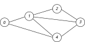
Coloreado de grafos
- Dado un grafo \(G\) y una cantidad \(c\) de colores. ¿Es posible asignar un color a cada vértice del grafo de modo que no haya dos vértices adyacentes con el mismo color?
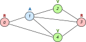
- Con \(c \geq 3\) colores es posible el coloreado de este grafo.
- Con \(c < 3\) no es posible.
Aplicaciones del coloreado de grafos
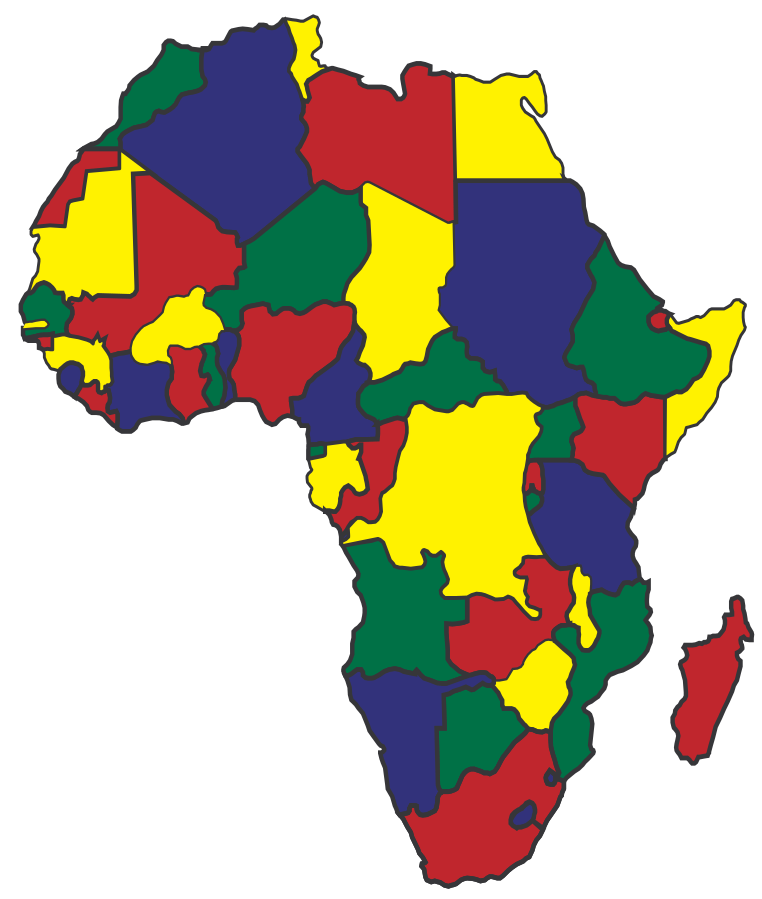
Coloreado de mapas
Programación de horarios de eventos, exámenes, etc.
Asignación de variables a registros de CPU
Asignación de frecuencias a redes inalámbricas
etc.
Formalización del problema
Suponemos que el grafo tiene \(n\) vértices, numerados desde \(0\) hasta \(n - 1\).
Suponemos que tenemos \(c\) colores.
Una solución válida es un array \(X[0..n)\), de modo que \(X[i]\) es el color asignado al vértice \(i\)-ésimo del grafo.
- Si los vértices \(i\) y \(j\) son adyacentes en el grafo, entonces \(X[i] \neq X[j]\).
Construcción incremental de soluciones
Una solución parcial es un array \(X[0..k)\), donde \(k \leq n\).
Una solución parcial es factible si no asigna el mismo color a dos vértices adyacentes del grafo.
Si \(k < n\), debemos extender la solución con otro color \(z\):
\[ X' = X +\!\!\!+ \: [\textcolor{red}{z}] \]
Si \(X'\) es factible, podemos seguir explorando esa solución.
Si \(X'\) no es factible, podemos descartar \(X'\) y buscar otro \(z'\) con el que extender \(X\).
Si no es posible extender \(X\) con un color para obtener otra solución parcial factible, debemos rectificar algunas de las componentes de \(X\) y volver a intentarlo.
Ejemplo
| 0 | 1 | 2 | 3 | 4 |
|---|---|---|---|---|
| R |
Ejemplo
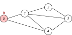
| 0 | 1 | 2 | 3 | 4 |
|---|---|---|---|---|
| R |
Ejemplo
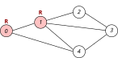
| 0 | 1 | 2 | 3 | 4 |
|---|---|---|---|---|
| R | R |
Ejemplo
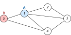
| 0 | 1 | 2 | 3 | 4 |
|---|---|---|---|---|
| R | R | |||
| A |
Ejemplo
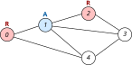
| 0 | 1 | 2 | 3 | 4 |
|---|---|---|---|---|
| R | R | R | ||
| A |
Ejemplo
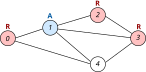
| 0 | 1 | 2 | 3 | 4 |
|---|---|---|---|---|
| R | R | R | R | |
| A |
Ejemplo
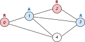
| 0 | 1 | 2 | 3 | 4 |
|---|---|---|---|---|
| R | R | R | R | |
| A | A |
Ejemplo
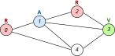
| 0 | 1 | 2 | 3 | 4 |
|---|---|---|---|---|
| R | R | R | R | |
| A | A | |||
| V |
Ejemplo
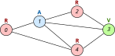
| 0 | 1 | 2 | 3 | 4 |
|---|---|---|---|---|
| R | R | R | R | R |
| A | A | |||
| V |
Ejemplo
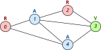
| 0 | 1 | 2 | 3 | 4 |
|---|---|---|---|---|
| R | R | R | R | R |
| A | A | A | ||
| V |
Ejemplo
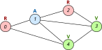
| 0 | 1 | 2 | 3 | 4 |
|---|---|---|---|---|
| R | R | R | R | R |
| A | A | A | ||
| V | V |
Ejemplo
| 0 | 1 | 2 | 3 | 4 |
|---|---|---|---|---|
| R | R | R | R | R |
| A | A | A | ||
| V | V |
Ejemplo
| 0 | 1 | 2 | 3 | 4 |
|---|---|---|---|---|
| R | R | R | R | R |
| A | A | |||
| V |
Ejemplo
| 0 | 1 | 2 | 3 | 4 |
|---|---|---|---|---|
| R | R | R | R | R |
| A | A | |||
| V |
Ejemplo
| 0 | 1 | 2 | 3 | 4 |
|---|---|---|---|---|
| R | R | R | R | R |
| A | ||||
Ejemplo
| 0 | 1 | 2 | 3 | 4 |
|---|---|---|---|---|
| R | R | R | R | R |
| A | ||||
Ejemplo
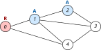
| 0 | 1 | 2 | 3 | 4 |
|---|---|---|---|---|
| R | R | R | R | R |
| A | A | |||
Ejemplo
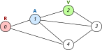
| 0 | 1 | 2 | 3 | 4 |
|---|---|---|---|---|
| R | R | R | R | R |
| A | A | |||
| V |
Ejemplo
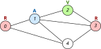
| 0 | 1 | 2 | 3 | 4 |
|---|---|---|---|---|
| R | R | R | R | R |
| A | A | |||
| V |
Ejemplo
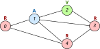
| 0 | 1 | 2 | 3 | 4 |
|---|---|---|---|---|
| R | R | R | R | R |
| A | A | |||
| V |
Ejemplo
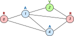
| 0 | 1 | 2 | 3 | 4 |
|---|---|---|---|---|
| R | R | R | R | R |
| A | A | A | ||
| V |
Ejemplo
| 0 | 1 | 2 | 3 | 4 |
|---|---|---|---|---|
| R | R | R | R | R |
| A | A | A | ||
| V | V |
Solución: [R, A, V, R, V]
7.3Espacios de soluciones y árbol de exploración
Construcción incremental de soluciones
Consideramos algoritmos en los que la solución se construye por etapas.
Una solución es un array \(X[0..n)\), donde cada \(X[i]\) pertenece a un conjunto finito \(S_i\).
Tenemos dos tipos de restricciones:
Restricciones explícitas, que ha de cumplir cada componente de manera individual: \(X[i] \in S_i\) para cada \(i\).
- Por ejemplo, en el coloreado de grafos: \(S_i = \{\)R, A, V\(\}\) para todo \(i\).
Restricciones implícitas, que involucran a varias componentes.
- Por ejemplo, en el coloreado de grafos: \(X[i]\) y \(X[j]\) no pueden tener el mismo color si \(i\) y \(j\) son vértices adyacentes.
Espacio de soluciones
Suponemos que las soluciones de un problema son arrays de tamaño \(n\).
Una solución parcial es un array \(X[0..k)\), donde \(k \leq n\).
El espacio de soluciones está formado por todas las soluciones parciales que satisfacen las restricciones explícitas.
En el coloreado de grafos: [R, A, V, R, V], [R], [ ], [V, V, V]
El espacio de soluciones puede estructurarse mediante un árbol de exploración.
Árbol de exploración
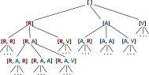
Test de factibilidad (o función de poda)
Determina si una solución parcial puede conducir a una solución satisfactoria.
Test de factibilidad (o función de poda)
Determina si una solución parcial puede conducir a una solución satisfactoria.
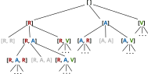
Cómo recorrer el árbol de exploración
- Vuelta atrás (backtracking)
-
Se recorre el árbol de manera ordenada mediante una función recursiva (recorrido en profundidad). No se recorre un hijo mientras no se hayan recorrido sus hermanos anteriores.
- Ramificación y poda (branch and bound)
-
En cada momento se expande el nodo más «prometedor». Es posible saltar de una rama a otra. Se implementa de manera iterativa utilizando una cola de prioridad de nodos.
7.4Algoritmos de vuelta atrás (backtracking)
Coloreado de grafos
Dado un grafo g, y un número natural
num_colores, imprimir las formas posibles de colorear el
grafo con un máximo de num_colores colores.
void colorear_grafo(const Grafo &g, int num_colores);
Resultado:
[R, A, V, R, V]
[R, V, A, R, A]
[A, R, V, A, V]
[A, V, R, A, R]
[V, R, A, V, A]
[V, A, R, V, R]Representación de soluciones
Si el grafo
gtiene n vértices, representamos una solución como un vectorsolde n elementos.sol[i] =color asignado al vérticei
Una solución parcial se representa mediante un par
(sol, k), dondesoles un vector de n elementos ykes un número ≤ n, que indica el segmentosol[0..k)que constituye la solución parcial.
Generalización de la función colorear_grafo
Generalizamos la función
colorear_grafoincluyendo la solución parcial construida hasta ahora:void colorear_grafo_gen(const grafo &g, int num_colores, int k, vector<int> &sol);
// Precondiciones: 1) num_colores >= 1
// 2) sol.size() == num_vertices(g)
// 3) 0 <= k <= num_vertices(g)
// 4) El segmento sol[0..k) es una solución factibleLlamada inicial:
void colorear_grafo(const grafo &g, int num_colores) {
vector<int> sol(num_vertices(g));
colorear_grafo_gen(g, num_colores, 0, sol);
}Cumple la precondición, porque
sol[0..0)es una solución factible.
Caso base: colorear_grafo_gen
Cuando
k == n, la solución construidasol[0..k)ya está completa.Todos los vértices del grafo tienen asignado un color, y además la asignación cumple las restricciones del problema.
void colorear_grafo_gen(const grafo &g, int
num_colores, int k, vector<int>
&sol) {
if (k == sol.size())
{
imprimir_solucion(sol);
} else
{
// ... caso recursivo
...
}
}
Caso recursivo: colorear_grafo_gen
Cuando
k < n, tenemos una solución parcialsol[0..k)que hemos de extender con un color más.Para cada color
icomprobamos si es posible asignar el colorial vérticekSi es posible, extendemos la solución y exploramos el árbol correspondiente.
void colorear_grafo_gen(const grafo &g, int
num_colores, int k, vector<int>
&sol) {
if (k == sol.size())
{
imprimir_solucion(sol);
} else
{
for (int i = 0; i < num_colores; i++)
{
if (es_factible(g, sol, k, i)) { // ¿Se puede asignar el color i al vértice
k?
// Asignamos color i-ésimo al
vértice k-ésimo.
sol[k] =
i;
// Extendemos la solución
resultante sol[0..k+1) mediante una llamada
recursiva
colorear_grafo_gen(g, num_colores, k + 1,
sol);
}
}
}
}
Test de factibilidad
- Dado un grafo y una solución parcial
sol[0..k), ¿es posible extenderla asignando el colorial vérticek?
bool es_factible(const grafo &g, vector<int>
&sol, int k, int
i) {
bool factible = true;
// Recorremos las
aristas adyacentes
const vector<arista> &as = aristas(g,
k);
int j = 0;
while (j < as.size()
&& factible) {
int v =
as[j].destino;
// Si el vértice v
(adyacente a k) forma parte de la solución parcial (es decir,
ya
// tiene asignado un color), y
además coincide con el color i, entonces no podemos
// asignar el color i al vértice
k.
if (v < k && sol[v] == i) {
factible = false;
}
j++;
}
return factible;
}
Coste
Supongamos que el grafo tiene \(V\) vértices y queremos colorearlo con \(c\) colores.
¿Cuál es el tamaño del árbol de exploración?
\[ \mathcal{O}(c^V) \]
Esquema general de algoritmos vuelta atrás
Esquema general
method vueltaAtras(entrada: T, k: int, inout sol[0..n): array<S>)
requires n
>= 0 \({\wedge}\) 0 <= k <= n
\({\wedge}\)
factible(sol[0..k))
{
if (k == n)
{
tratar_solucion(sol);
} else
{
for each i \(\in\) S {
if
factible(sol[0..k) ++ [i]) {
sol[k] :=
i;
vueltaAtras(entrada, k + 1,
sol);
}
}
}
}
Obtener una única solución
Coloreado de grafos
El algoritmo de vuelta atrás utilizado hasta ahora imprime todas las soluciones.
¿Y si queremos que la exploración del árbol se detenga cuando se ha encontrado una solución?
Modificamos la signatura de la función generalizada:
bool colorear_grafo_gen(const grafo &g, int num_colores, int k, vector<int> &sol);
- Devuelve
truesi existe una solución total factible que extienda a la solución parcialsol[0..k).
- Devuelve
Coloreado de grafos: una solución
bool colorear_grafo_gen(const grafo &g, int
num_colores, int k, vector<int>
&sol) {
if (k == sol.size())
{
return true;
}
else {
bool
solucion_encontrada = false;
int i = 0;
while (i <
num_colores && !solucion_encontrada)
{
if (es_factible(g, sol, k, i))
{
sol[k] = i;
solucion_encontrada =
colorear_grafo_gen(g, num_colores, k + 1,
sol);
}
i++;
}
return
solucion_encontrada;
}
}
7.5Técnica de marcaje:
el problema de las
n reinas
El problema de las n reinas
Tenemos un tablero de ajedrez de tamaño n × n.
Queremos colocar n reinas en el tablero sin que se ataquen entre ellas.
- Es decir, sin que haya dos reinas en la misma fila, en la misma columna o en la misma diagonal.
Representación de la solución (n = 8)
| 0 | 1 | 2 | 3 | 4 | 5 | 6 | 7 | |
|---|---|---|---|---|---|---|---|---|
| 0 | ♛ | |||||||
| 1 | ♛ | |||||||
| 2 | ♛ | |||||||
| 3 | ♛ | |||||||
| 4 | ♛ | |||||||
| 5 | ♛ | |||||||
| 6 | ♛ | |||||||
| 7 | ♛ |
sol = [(0,0), (1,4), (2,7), (3,5), (4,2), (5,6), (6,1), (7,3)]
Representación simplificada (n = 8)
| 0 | 1 | 2 | 3 | 4 | 5 | 6 | 7 | |
|---|---|---|---|---|---|---|---|---|
| 0 | ♛ | |||||||
| 1 | ♛ | |||||||
| 2 | ♛ | |||||||
| 3 | ♛ | |||||||
| 4 | ♛ | |||||||
| 5 | ♛ | |||||||
| 6 | ♛ | |||||||
| 7 | ♛ |
sol = [0, 4, 7, 5, 2, 6, 1, 3]
sol[i] = j \(\Longleftrightarrow\) hay una reina en la
casilla (i, j)
Test de factibilidad
- Suponemos que tenemos
kreinas en las filas[0..k)del tablero, cuyas columnas están ensol[0..k), ¿podemos añadir una nueva reina en la filak, columnacol?
bool es_factible(const vector<int> &sol, int k,
int col) {
bool
factible = true;
int i = 0;
while (i < k
&& factible) {
if ((i, sol[i]) está en la misma columna o diagonal que (k,
col)) {
factible = false;
}
i++;
}
return
factible;
}
Test de factibilidad
Para saber si dos reinas colocadas en \((i, j)\), \((i', j')\) están en la misma diagonal, calculamos:
- \(|i - i'|\)
- \(|j - j'|\)
Si ambas coinciden, están en la misma diagonal.
| 0 | 1 | 2 | 3 | 4 | 5 | 6 | 7 | |
|---|---|---|---|---|---|---|---|---|
| 0 | ♛ | |||||||
| 1 | ||||||||
| 2 | ||||||||
| 3 | ♛ | |||||||
| 4 | ||||||||
| 5 | ||||||||
| 6 | ||||||||
| 7 |
Test de factibilidad
bool es_factible(const vector<int> &sol, int k,
int col) {
bool
factible = true;
int i = 0;
while (i < k
&& factible) {
// Si
sol[i] está en la misma columna o diagonal que
la
// reina (k, col), la solución no
es factible.
if (sol[i] == col || abs(k -
i) == abs(col - sol[i])) {
factible = false;
}
i++;
}
return
factible;
}
Algoritmo de vuelta atrás
void n_reinas_gen(int n, int k, vector<int>
&sol) {
if (k == n)
{
imprimir_solucion(sol);
} else
{
for (int col = 0; col < n; col++)
{
if (es_factible(sol, k, col))
{
sol[k] = col;
n_reinas_gen(n, k + 1, sol);
}
}
}
}
Llamada inicial:
vector<int>
sol(n);
n_reinas_gen(n, 0, sol);
¿Coste del test de factibilidad?
bool es_factible(const vector<int> &sol, int k,
int col) {
bool
factible = true;
int i = 0;
while (i < k
&& factible) {
if (sol[i] == col ||
abs(k - i) == abs(col - sol[i])) {
factible = false;
}
i++;
}
return
factible;
}
Coste en tiempo: \(\Theta(k)\)
¿Podríamos hacer el test de factibilidad en tiempo \(\Theta(1)\)?
Marcaje
Técnica de marcaje
Consiste en almacenar información adicional que ayuda a decidir, de manera eficiente, si una solución parcial es válida o no.
Esta información adicional es específica del problema.
En el problema de las n reinas, necesitamos tres vectores de booleanos:
cols[i]: indica si en la columnaise ha colocado una reina.diag_ps[i]: indica si en lai-ésima diagonal de dirección ↘ se ha colocado una reina.diag_ss[i]: indica si en lai-ésima diagonal de dirección ↗ se ha colocado una reina.
Cada vez que colocamos una reina en una posición, ponemos a
truela columna correspondiente encols, y las diagonales correspondientes endiag_psydiag_ss
¿Cómo numeramos las diagonales ↘?
| 0 | 1 | 2 | 3 | 4 | 5 | 6 | 7 | |
|---|---|---|---|---|---|---|---|---|
| 0 | 0 | 1 | 2 | 3 | 4 | 5 | 6 | 7 |
| 1 | -1 | 0 | 1 | 2 | 3 | 4 | 5 | 6 |
| 2 | -2 | -1 | 0 | 1 | 2 | 3 | 4 | 5 |
| 3 | -3 | -2 | -1 | 0 | 1 | 2 | 3 | 4 |
| 4 | -4 | -3 | -2 | -1 | 0 | 1 | 2 | 3 |
| 5 | -5 | -4 | -3 | -2 | -1 | 0 | 1 | 2 |
| 6 | -6 | -5 | -4 | -3 | -2 | -1 | 0 | 1 |
| 7 | -7 | -6 | -5 | -4 | -3 | -2 | -1 | 0 |
La casilla \((i, j)\) se encuentra en la diagonal \(j - i\).
Como el vector diag_ps se numera desde \(0\) hasta \(2n -
2\), hay que sumar \(n-1\) a la
diagonal para obtener su posición correspondiente en el vector
diag_ps.
¿Cómo numeramos las diagonales ↗?
| 0 | 1 | 2 | 3 | 4 | 5 | 6 | 7 | |
|---|---|---|---|---|---|---|---|---|
| 0 | 0 | 1 | 2 | 3 | 4 | 5 | 6 | 7 |
| 1 | 1 | 2 | 3 | 4 | 5 | 6 | 7 | 8 |
| 2 | 2 | 3 | 4 | 5 | 6 | 7 | 8 | 9 |
| 3 | 3 | 4 | 5 | 6 | 7 | 8 | 9 | 10 |
| 4 | 4 | 5 | 6 | 7 | 8 | 9 | 10 | 11 |
| 5 | 5 | 6 | 7 | 8 | 9 | 10 | 11 | 12 |
| 6 | 6 | 7 | 8 | 9 | 10 | 11 | 12 | 13 |
| 7 | 7 | 8 | 9 | 10 | 11 | 12 | 13 | 14 |
La casilla \((i, j)\) se encuentra en la diagonal \(i + j\).
Test de factibilidad con marcaje
Queremos añadir una reina en la posición
(k, col).Comprobamos si está marcada la columna
col.La posición
(k, col)pertenece a la diagonal (↘) con númerocol - k.- Comprobamos si está marcada la posición
col - k + (n - 1)del arraydiag_ps.
- Comprobamos si está marcada la posición
La posición
(k, col)pertenece a la diagonal (↗) con númerok + col.- Comprobamos si está marcada la posición
k + coldel arraydiag_ss.
- Comprobamos si está marcada la posición
bool es_factible(int n, int k, int col,
const
vector<bool>
&cols, const vector<bool>
&diag_ps, const vector<bool>
&diag_ss) {
return !cols[col] &&
!diag_ps[col - k + (n - 1)] &&
!diag_ss[k + col];
}
Coste: \(\Theta(1)\)
Algoritmo de vuelta atrás
Los vectores de booleanos
cols,diags_ps,diags_ssson parámetros de entrada/salida de la función que implementa el algoritmo de vuelta atrás.Estos vectores se propagan a lo largo de todo el árbol de exploración.
void n_reinas(int
n, int k, vector<int>
&sol,
vector<bool>
&cols, vector<bool>
&diag_ps, vector<bool>
&diag_ss);
- En la llamada inicial, inicializamos todos estos vectores a
false.
void n_reinas(int
n) {
vector<int> sol(n);
vector<bool> cols(n,
false);
vector<bool>
diag_ps(2*n - 1,
false);
vector<bool>
diag_ss(2*n - 1,
false);
n_reinas(n, 0, sol, cols, diag_ps, diag_ss);
}
Algoritmo de vuelta atrás
void n_reinas(int
n, int k, vector<int>
&sol,
vector<bool> &cols,
vector<bool>
&diag_ps,
vector<bool>
&diag_ss) {
if (k == n)
{
imprimir_solucion(sol);
} else
{
for (int col = 0; col < n; col++)
{
if (es_factible(n, k, col, cols, diag_ps,
diag_ss)) {
sol[k] = col;
cols[col] = true; Marcaje
diag_ps[col - k + (n -
1)] = true; Marcaje
diag_ss[k + col] =
true; Marcaje
n_reinas(n, k + 1, sol, cols, diag_ps,
diag_ss);
cols[col] = false; Desmarcaje
diag_ps[col - k +
(n - 1)] = false;
Desmarcaje
diag_ss[k +
col] = false; Desmarcaje
}
}
}
}
Marcamos antes de la llamada recursiva
Desmarcamos después de la llamada recursiva.
Esquema general
Vuelta atrás con marcaje
method vueltaAtras(entrada: T, k: int,
inout
sol[0..n): array<S>,
inout m:
M)
requires n >= 0 \({\wedge}\) 0 <= k <= n \({\wedge}\)
factible(sol[0..k))
{
if (k == n)
{
tratar_solucion(sol);
} else
{
for each i \(\in\) S {
if
factible(sol[0..k) ++ [i], m)
{
sol[k] := i;
marcar(m, k,
i);
vueltaAtras(entrada, k + 1, sol);
desmarcar(m, k,
i);
}
}
}
}
7.6Problemas de optimización mediante vuelta
atrás:
el problema del viajante
El problema del viajante
- Tenemos un grafo valorado con \(V\) vértices, que representa conexiones entre ciudades, y el coste que conlleva desplazarse de una ciudad a otra.

- Un viajante empieza en la ciudad 0, y ha de recorrer todas las ciudades del grafo exactamente una vez cada una, y terminar en la ciudad de partida.
¿Cuál es el recorrido de menor coste?
El problema del viajante
- Tenemos un grafo valorado con \(V\) vértices, que representa conexiones entre ciudades, y el coste que conlleva desplazarse de una ciudad a otra.
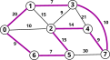
- Un viajante empieza en la ciudad 0, y ha de recorrer todas las ciudades del grafo exactamente una vez cada una, y terminar en la ciudad de partida.
¿Cuál es el recorrido de menor coste?
Representación de la solución
- Una solución es un vector sol[0..V) que representa el orden de visita de las ciudades.
- Restricciones explícitas
- sol[0] = 0.
- sol[i] \(\in\) {1,…,V-1} para 1 <= i < V.
- Restricciones implícitas:
- sol[i] y sol[i+1] son adyacentes para 0 <= i < V - 1.
- sol[V - 1] y sol[0] son adyacentes.
- No existe i != j tal que sol[i] == sol[j].
Función objetivo
Los problemas de optimización tratan de minimizar (o maximizar) una función objetivo \(C\).
En el problema del viajante, la función objetivo de una solución es la suma de los costes de las aristas que atraviesa esa solución:
\[ C(\texttt{sol}) = \sum_{i=0}^{V-2} \mathit{coste}(\texttt{sol}[i], \texttt{sol}[i + 1]) + \mathit{coste}(\texttt{sol}[V-1], \texttt{sol}[0]) \]
Soluciones parciales
Una solución parcial sol[0..k) con 1 <= k <= V contiene el recorrido del viajante determinado hasta el momento.
Restricciones explícitas (mismas que antes pero cambiando
Vpork):- sol[0] = 0.
- sol[i] \(\in\) {1,…,V-1} para 1 <= i < k.
Restricciones implícitas (mismas que antes pero cambiando
Vpork):- sol[i] y sol[i+1] son adyacentes para 0 <= i < k - 1.
- Si k == V, entonces sol[V - 1] y sol[0] son adyacentes.
- No existe i != j tal que sol[i] == sol[j].
Test de factibilidad
Para determinar que
sol[0..k)no recorre una misma ciudad varias veces, necesitamos aplicar técnicas de marcaje.Supongamos un vector
visitadas[0..V)tal quevisitadas[i] == truesi el vérticeiforma parte desol[0..k).
- La función
es_factibledetermina si es posible ampliar una solución parcialsol[0..k)añadiendo laciudaddada como vérticek-ésimo del recorrido.
bool es_factible(const grafo<int>
&g, int k, int
ciudad, const vector<int>
&sol,
const vector<bool>
&visitadas) {
return adyacentes(g, sol[k -
1], ciudad) && !visitadas[ciudad]
&&
(k != sol.size() - 1
|| adyacentes(g, ciudad, sol[0]));
}
Función de vuelta atrás (versión 1)
void viajante(const grafo<int>
&g, int k, vector<int>
&sol,
vector<bool> &visitadas, vector<int>
&sol_mejor);
g: grafo de entrada.k,sol: determinan la solución parcial encontrada hasta el momento.visitadas(parám. E/S): indica qué ciudades forman parte desol[0..k).sol_mejor(parám. E/S): indica la solución total de menor coste encontrada hasta el momento.
Función de vuelta atrás (versión 1)
void viajante(const grafo<int>
&g, int k, vector<int>
&sol,
vector<bool> &visitadas, vector<int>
&sol_mejor) {
if (k == sol.size())
{
if (coste(g, sol) < coste(g, sol_mejor))
{
sol_mejor = sol;
}
} else
{
for (int c = 0; c < num_vertices(g); c++)
{
if (es_factible(g, k, c, sol, visitadas))
{
sol[k] = c;
visitadas[c] = true; //
Marcaje
viajante(g, k + 1,
sol, visitadas, sol_mejor);
visitadas[c] = false; //
Desmarcaje
}
}
}
}
- Problema: En cada hoja del árbol de exploración se calcula la función objetivo de esa solución. Esto tiene coste \(\Theta(V)\).
Añadir marcaje: coste del camino actual
Función de vuelta atrás (versión 2)
void viajante(const grafo<int>
&g, int k, vector<int>
&sol, int
coste_acum,
vector<bool>
&visitadas, vector<int> &sol_mejor, int &coste_mejor);
Añadimos dos parámetros:
coste_acum: coste de la solución parcialsol[0..k).\[ \texttt{coste\_acum} = \sum_{i=0}^{k-1} \mathit{coste}(\texttt{sol}[i], \texttt{sol}[i + 1]) \]
coste_mejor(param. E/S): coste de la mejor solución total encontrada hasta el momento.\[ \texttt{coste\_mejor} = C(\texttt{sol\_mejor}) \]
Función de vuelta atrás (versión 2)
void viajante(const grafo<int>
&g, int k, vector<int>
&sol, int
coste_acum,
vector<bool>
&visitadas, vector<int> &sol_mejor, int &coste_mejor)
{
if (k == sol.size()) {
coste_acum += g[sol[k - 1]][0];
if (coste_acum < coste_mejor) {
coste_mejor =
coste_acum;
sol_mejor = sol;
}
}
else {
for (int c = 0; c <
num_vertices(g); c++) {
if (es_factible(g, k,
c, sol, visitadas)) {
sol[k] = c;
visitadas[c]
= true;
viajante(g, k + 1, sol, coste_acum +
g[sol[k-1]][c], visitadas, sol_mejor,
coste_mejor);
visitadas[c] = false;
}
}
}
}
Llamada inicial
vector<int>
viajante(const grafo<int> &g) {
vector<int>
sol(num_vertices(g));
vector<int> sol_mejor(num_vertices(g));
vector<bool>
visitadas(num_vertices(g), false);
// Comenzamos
en la ciudad 0
sol[0] = 0;
visitadas[0] =
true;
//
Inicializamos el coste mejor a +INF
int coste_mejor = numeric_limits<int>::max();
//
Hacemos la llamada inicial con k = 1 y
coste_acum = 0
viajante(g, 1, sol, 0, visitadas,
sol_mejor, coste_mejor);
return
sol_mejor;
}
Esquema general
Optimización mediante vuelta atrás
method vueltaAtras(entrada: T, k: int,
inout
sol[0..n): array<S>, coste_acum: int,
inout
sol_mejor[0..n): array<S>, inout coste_mejor: int)
requires n >= 0
\({\wedge}\) 0 <= k <= n \({\wedge}\) factible(sol[0..k)) \({\wedge}\) coste_mejor == \(C\)(sol_mejor)
{
if
(k == n) {
if coste_acum < coste_mejor
{
coste_mejor := coste; sol_mejor := sol;
}
}
else {
for each i \(\in\) S {
if
factible(sol[0..k) ++ [i]) {
sol[k] :=
i;
vueltaAtras(entrada, k + 1, sol,
coste_acum + coste_nuevo(sol, k, i), sol_mejor,
coste_mejor);
}
}
}
}
7.7Optimización mediante estimación optimista
Introducción
Los algoritmos de vuelta atrás vistos hasta ahora solamente descartan nodos del árbol de exploración cuando corresponden a soluciones no factibles.
- Test de factibilidad / función de poda.
- Cuando los algoritmos son de optimización, también podemos decidir no explorar un nodo si sabemos con seguridad que no va a llevar a ninguna solución mejor que la ya encontrada hasta ahora.
Estimación optimista (minimización)
Suponemos una solución parcial \(\texttt{sol}[0..k)\) de un problema de minimización con una función objetivo \(C\).
Decimos que \(K\) es una estimación optimista de \(C(\texttt{sol}[0..k))\) si para toda solución total \(\texttt{sol}[0..n)\) que extienda a la solución parcial \(\texttt{sol}[0..k)\) se cumple que:
\[K \leq C(\texttt{sol}[0..n))\]
Si la estimación optimista \(K\) del valor de una solución parcial es mayor o igual que \(C(\texttt{solMejor}[0..n))\), donde \(\texttt{solMejor}\) es la solución total óptima encontrada hasta el momento, entonces podemos podar el nodo del árbol de exploración correspondiente a la solución parcial.
Estimación optimista (maximización)
Suponemos una solución parcial \(\texttt{sol}[0..k)\) de un problema de maximización con una función objetivo \(G\).
Decimos que \(K\) es una estimación optimista de \(G(\texttt{sol}[0..k))\) si para toda solución total \(\texttt{sol}[0..n)\) que extienda a la solución parcial \(\texttt{sol}[0..k)\) se cumple que:
\[K \geq G(\texttt{sol}[0..n))\]
Si la estimación optimista \(K\) del valor de una solución parcial es menor o igual que \(G(\texttt{solMejor}[0..n))\), donde \(\texttt{solMejor}\) es la solución total óptima encontrada hasta el momento, entonces podemos podar el nodo del árbol de exploración correspondiente a la solución parcial.
Estimación optimista en el problema del viajante
El problema del viajante
- Tenemos un grafo valorado con \(V\) vértices, que representa conexiones entre ciudades, y el coste que conlleva desplazarse de una ciudad a otra.
Estimación optimista de una solución parcial
- Supongamos una solución parcial que ya ha recorrido tres ciudades, con un coste acumulado de 27.
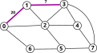
- Quedan por recorrer otras 5 ciudades y volver a la ciudad de partida \(\Rightarrow\) 6 aristas.
Estimación optimista \(=\) \(27 + 6 * (\)arista de coste mínimo en \(G\)\()\)
Estimación optimista de una solución parcial
Sea \(\texttt{sol}[0..k)\) una solución parcial en un grafo de \(V\) vértices.
Debemos visitar \(V - k\) vértices para completarla, y luego regresar a la ciudad de partida.
- \(V - k + 1\) aristas por recorrer.
Sea \(\mathit{min\_arista}\) el coste de la arista de mínimo coste en todo el grafo.
- Puede calcularse de antemano, antes del algoritmo vuelta atrás.
Estimación optimista \(=\) \(C(\texttt{sol}[0..k)) + (V - k + 1) * \mathit{min\_arista}\)
Función de vuelta atrás
void viajante(const Grafo<int>
&g, int min_arista, int k, vector<int> &sol, int
coste_acum,
vector<bool> &visitadas, vector<int>
&sol_mejor, int &coste_mejor)
{
if (k == sol.size()) {
// ... igual que antes ...
}
else {
for (int c = 0; c <
g.size(); c++) {
if (es_factible(g, k, c, sol,
visitadas)) {
sol[k] = c;
int coste_optimista =
coste_acum + g[sol[k-1]][c] + (g.size() - k)
* min_arista;
if (coste_optimista < coste_mejor)
{
visitadas[c] = true;
viajante(g, min_arista, k + 1, sol, coste_acum + g[sol[k-1]][c], visitadas,
sol_mejor,
coste_mejor);
visitadas[c] = false;
}
}
}
}
}
Ejemplo de ejecución
- Suponemos el siguiente grafo:
- Sin estimación, se visitan 137 nodos del árbol de exploración.
- Con estimación optimista, se visitan 95 nodos del árbol de exploración.
7.8Ramificación y poda
Vuelta atrás vs Ramificación y poda
En los algoritmos de vuelta atrás, el árbol de exploración se explora mediante un recorrido en profundidad.
- Los hijos de un nodo se exploran de izquierda a derecha.
- No se explora un nodo hasta no haber finalizado la exploración del hermano que está a su izquierda.
Vuelta atrás vs Ramificación y poda
El esquema de ramificación y poda se utiliza, principalmente, en algoritmos de optimización con estimación optimista.
En lugar de explorar el árbol de manera sistemática, se priorizan los nodos en función de su estimación optimista.
Para ello, mantenemos una cola de prioridad que contendrá los nodos pendientes de explorar y selecciona, entre ellos, aquel de mayor estimación optimista (en problemas de maximización) o de menor estimación optimista (en problemas de minimización). Cuando se selecciona un nodo, se añaden sus hijos a la cola de prioridad.
Ejemplo
Suponemos un problema de minimización. El nodo raíz del árbol de exploración tiene una estimación optimista de 3.
Insertamos el nodo raíz en la cola de prioridad.
Contenido de la cola de prioridad:
Ejemplo
Sacamos el nodo raíz de la cola de prioridad e insertamos sus hijos.
Contenido de la cola de prioridad:
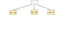
Ejemplo
Sacamos de la cola el nodo de menor estimación optimista e insertamos sus hijos.
Contenido de la cola de prioridad:
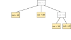
Ejemplo
Volvemos a sacar el nodo de menor estimación de la cola (nodo con estimación
10) e insertamos sus hijos.Contenido de la cola de prioridad:
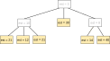
Ejemplo
Sacamos el nodo de menor estimación (
12).Supongamos que solo tiene un hijo, que es una solución completa con valor
19.Anotamos esa solución como la mejor solución óptima encontrada hasta el momento.
Cola de prioridad:
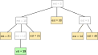
Ejemplo
Mejor valor encontrado hasta el momento: 19
Hay nodos en la cola con estimaciones optimistas más bajas, así que seguimos explorando el árbol.
Cola de prioridad:
Ejemplo
Mejor valor encontrado hasta el momento: 19
Sacamos el nodo de la cola con menor estimación (
14) y exploramos sus hijos.Supongamos que los dos son soluciones completas, y que una de ellas con valor 15 y otra con valor 31.
La solución con valor 15 mejora el óptimo conocido hasta el momento.
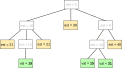
Ejemplo
Mejor valor encontrado hasta el momento: 15
Cola de prioridad:
Todos los nodos de la cola tienen valores de estimación optimista mayores que 15. Por tanto, podemos finalizar la exploración aquí, porque no vamos a encontrar ninguna solución mejor en todo el árbol.
Implementación de algoritmos de ramificación y poda
Cuestiones de implementación
El árbol de exploración es un mecanismo conceptual para diseñar el algoritmo. El árbol no se crea en memoria durante la ejecución del algoritmo.
En los algoritmos de vuelta atrás, este árbol «virtual» se recorría mediante un esquema recursivo.
En los algoritmos de ramificación y poda, el árbol se recorre mediante un algoritmo iterativo. Aunque el árbol sigue sin existir en memoria, los nodos sí se crean y se añaden a la cola de prioridad.
¿Qué se almacena en cada nodo?
La solución parcial \(X[0..k)\) correspondiente a ese nodo, incluyendo el nivel
kde esa solución en el árbol de exploración.Los atributos de marcaje correspondientes a ese nodo.
La estimación optimista de la solución parcial \(X[0..k)\).
struct nodo {
sol[0..k) :
array<S>;
k : int;
marcaje :
…;
coste :
…;
estimacion_optimista : int;
};
Esquema general (minimización)
var cp :
cola-prioridad<nodo>;
var raiz : nodo := crear nodo
raiz;
cp.push(raiz);
var
coste_mejor := \(+\infty\);
var
sol_mejor[0..n) :
array<S>;
while \(\neg\)cp.empty() \({\wedge}\) cp.top().estimacion_optimista
< coste_mejor {
var x := cp.top();
cp.pop();
for i = 1 until número de hijos de x {
var
hijo : nodo := crear hijo
i-ésimo;
if (es_factible(hijo))
{
if (hijo.k == n))
{
if (hijo.coste < coste_mejor) {
coste_mejor := hijo.coste; sol_mejor := hijo.sol; }
}
else if (hijo.estimacion_optimista
< coste_mejor)
{
cp.push(hijo);
}
}
}
}
Ejemplo: el problema del viajante
Representación de los nodos del árbol de exploración
struct Nodo {
vector<int>
sol; // Camino seguido por el
viajante
int
k; // Nivel de la
solución
vector<bool> visitadas; //
Ciudades visitadas
int
coste_acum; // Coste
acumulado
int
estimacion_optimista; // Estimación
optimista
};
- En C++, las colas de prioridad son, por defecto, de máximos.
- Definimos el orden entre nodos del siguiente modo: un nodo
n2es más prioritario que otro nodon1, si la estimación optimista den2es menor que la estimación optimista den1.
bool operator<(const Nodo &n1, const
Nodo &n2) {
return n1.estimacion_optimista
< n2.estimacion_optimista;
}
Algoritmo de ramificación y poda
int n = num_vertices(g); // g = grafo de entrada
int min_arista =
coste_min_arista(g);
priority_queue<Nodo> cp;
// Raíz del árbol de exploración
Nodo
raiz;
raiz.sol = vector<int>(n);
raiz.sol[0] = 0;
raiz.k =
1;
raiz.visitadas = vector<bool>(n,
false);
raiz.visitadas[0] = true;
raiz.coste_acum = 0;
raiz.estimacion_optimista = num_vertices(g)
* min_arista;
// Añadimos la raíz a la cola de
prioridad
cp.push(raiz);
int
coste_mejor = numeric_limits<int>::max();
vector<int>
sol_mejor;
...
// Finalizamos el bucle cuando la cola de
prioridad esté vacía (no quedan más nodos por explorar)
// o el nodo más prioritario no puede superar la mejor
solución encontrada hasta el momento.
while
(!cp.empty() && cp.top().estimacion_optimista < coste_mejor)
{
// Sacamos nodo más
prioritario
Nodo x = cp.top(); cp.pop();
// Recorremos los vértices
restantes
for (int c = 0; c <
num_vertices(g); c++) {
if (es_factible(g, x.k,
c, x.sol, x.visitadas)) {
// Si es
factible añadir el nodo c, construimos el hijo que añade el nodo
c
// al
camino.
Nodo hijo = x;
hijo.sol[x.k] =
c;
hijo.k = x.k + 1;
hijo.visitadas[c] = true;
hijo.coste_acum = x.coste_acum +
g[hijo.sol[x.k - 1]][c];
hijo.estimacion_optimista =
hijo.coste_acum + (num_vertices(g) - hijo.k + 1) * min_arista;
if
(hijo.k == n) { // Si es solución
completa
hijo.coste_acum += g[hijo.sol[n-1]][0];
if
(hijo.coste_acum < coste_mejor) { coste_mejor = hijo.coste_acum;
sol_mejor = hijo.sol; }
} else
if (hijo.estimacion_optimista < coste_mejor)
{
// Si es una solución parcial, la
añadimos a la cola de
prioridad
cp.push(hijo);
}
}
}
}